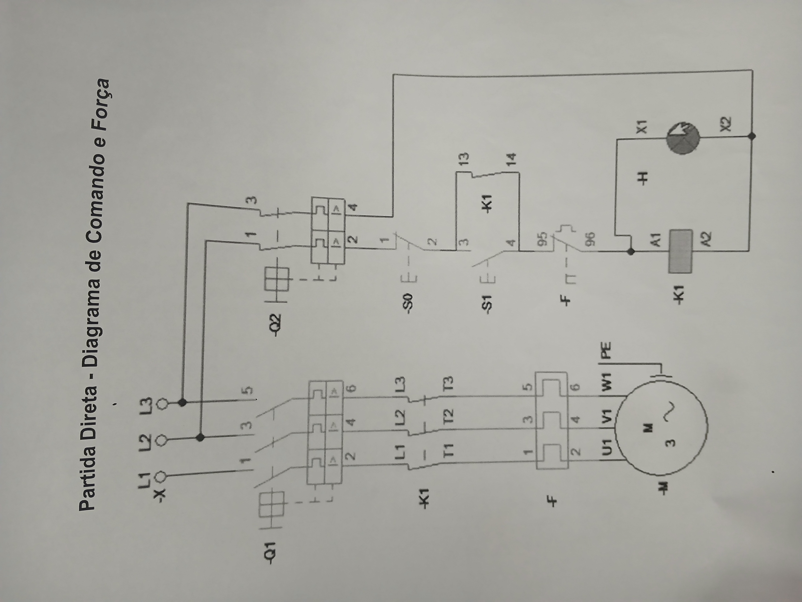

Simulações e Diagramas
"Tutorial" ➔ Laboratório Digital ( Sesi Senai )
"Tutorial" ➔ Diagrama ( CAD SIMU )
Descrição
Funcionamento: Após iniciar simulação o LED Sinalizador Verde (H1 ➔ contato de entrada = X1, contato de saída = X2) acende de imediato, pois não há nada que impeça a energia de chegar e circular por ele, assim indo do Terminal de Conexão Positivo de 24Vdc "+" (24 Volts em Corrente Contínua ➔ fio Vermelho), passando pelo LED Sinalizador Verde e chgando ao Terminal de Conexão Negativo "-" (0Vdc, GND ou Comum ➔ fio Preto), só sendo desativado após encerrar a simulação
"Prática 1 - Acionando um LED com Botão" ➔ Laboratório Digital ( Sesi Senai )
"Prática 1 - Acionando um LED com Botão" ➔ Diagrama ( CAD SIMU )
Descrição
Funcionamento: Logo após iniciar a simulação, ao apertar o Botão do Tipo Push Normalmente Aberto (Push Button NA ➔ B1 ➔ contato de entrada = 13, contato de saída = 14) ele passa de Normalmente Aberto (NA) para Normalmente Fechado (NF) enquanto pressionado, assim permitindo a passagem de energia por ele e pelo LED Sinalizador Verde (H1 ➔ contato de entrada = X1, contato de saída = X2) que, ao ser enrgizado acende pois não há nada que impeça a energia de chegar e circular por ele naquele momento; assim indo do Terminal de Conexão Positivo de 24Vdc "+" (24 Volts em Corrente Contínua ➔ fio Vermelho), passando pelo Botão do Tipo Push - NA (B1) enquanto pressionado, pelo LED Sinalizador Verde (H1) e chgando ao Terminal de Conexão Negativo "-" (0Vdc, GND ou Comum ➔ fio Preto).
Ao deixar de pressionar o Botão do Tipo Push - NA, ele passa de NF para NA por meio da ação de sua mola interna, assim abrindo o circuito e impedindo a passagem de energia, que por consequência desliga o LED Sinalizador Verde (H1).
"Prática 2 - Acionando um LED com Botão e Disjuntor" ➔ Laboratório Digital ( Sesi Senai )
"Prática 2 - Acionando um LED com Botão e Disjuntor" ➔ Diagrama ( CAD SIMU )
Descrição
Funcionamento: Logo após iniciar a simulação, e armar (ativar) o Disjuntor Motor (D1 ➔ contato auxiliar: entrada = 1, contato de saída = 2), ao apertar o Botão do Tipo Push Normalmente Aberto (Push Button NA ➔ B1 ➔ contato de entrada = 13, contato de saída = 14) ele passa de Normalmente Aberto (NA) para Normalmente Fechado (NF) enquanto pressionado, assim permitindo a passagem de energia por ele e pelo LED Sinalizador Verde (H1 ➔ contato de entrada = X1, contato de saída = X2) que, ao ser enrgizado acende pois não há nada que impeça a energia de chegar e circular por ele naquele momento; assim indo do Terminal de Conexão Positivo de 24Vdc "+" (24 Volts em Corrente Contínua ➔ fio Vermelho), passando pelo contato auxiliar Normalmente Aberto (NA) do Disjuntor Motor (ativado), pelo Botão do Tipo Push - NA (B1) enquanto pressionado, pelo LED Sinalizador Verde (H1) e chgando ao Terminal de Conexão Negativo "-" (0Vdc, GND ou Comum ➔ fio Preto).
Ao deixar de pressionar o Botão do Tipo Push - NA, ele passa de NF para NA por meio da ação de sua mola interna, assim abrindo o circuito (que se segue a partir dele) e impedindo a passagem de energia, que por consequência desliga o LED Sinalizador Verde; após isso desarmo (desligo) o Disjuntor Motor (D1) para "cortar" totalmente a passagem de energia pelo circuito.
"Prática 3 - Acionando dois LEDs (Botão NA e NF)" ➔ Laboratório Digital ( Sesi Senai )
"Prática 3 - Acionando dois LEDs (Botão NA e NF)" ➔ Diagrama ( CAD SIMU )
Descrição
Funcionamento: Logo após iniciar a simulação, e armar (ativar) o Disjuntor Motor (D1 ➔ contato auxiliar: entrada = 1, contato de saída = 2), ao apertar o Botão 1 do Tipo Push que possui seus contatos tanto em Normalmente Aberto quanto em Normalmente Fechado (conectados por mola ) (Push Button NA e NF ➔ B1 - NA: contato de entrada = 13, contato de saída = 14 | ➔ B1 - NF: contato de entrada = 21, contato de saída = 22 ) o B1 (NA) passa de Normalmente Aberto (NA) para Normalmente Fechado (NF) e o B1 (NF) passa de Normalmente Fechado (NF) para Normalmente Aberto (NA) enquanto pressionado, assim permitindo a passagem de energia pelo Botão 1 do Tipo Push (B1 - NA) e pelo LED Sinalizador Verde 2 (H2 ➔ contato de entrada = X1, contato de saída = X2) que, ao ser enrgizado acende pois não há nada que impeça a energia de chegar e circular por ele naquele momento; e ao mesmo tempo o Botão 1 do Tipo Push (B1 - NF) se abre, impedindo a passagem de energia por ele e pelo e pelo LED Sinalizador Verde 1 (H1 ➔ contato de entrada = X1, contato de saída = X2); assim indo do Terminal de Conexão Positivo de 24Vdc "+" (24 Volts em Corrente Contínua ➔ fio Vermelho), passando pelo contato auxiliar Normalmente Aberto (NA) do Disjuntor Motor (ativado), pelo Botão do pelo Botão 1 do Tipo Push (B1 - NA) e apenas pela entrada do Botão 1 do Tipo Push (B1 - NF) enquanto pressionado, pelo LED Sinalizador Verde 2 (H2) e chgando ao Terminal de Conexão Negativo "-" (0Vdc, GND ou Comum ➔ fio Preto).
Ao deixar de pressionar o Botão 1 do Tipo Push, o B1 (NA) passa de "NF" para "NA" e o B1 (NF) passa de "NA" para "NF" por meio da ação de sua mola interna, assim abrindo o circuito que se segue a partir B1 (NA) impedindo a passagem de energia e fechando o circuito que segue a partir do B1 (NF) liberando a passagem de energia, que por consequência desliga o LED Sinalizador Verde 2 (H2) e liga o LED Sinalizador Verde 1 (H1) ao qual a saída também está conectada ao Terminal de Conexão Negativo "-" (0Vdc, GND ou Comum ➔ fio Preto); após isso desarmo (desligo) o Disjuntor Motor (D1) para "cortar" totalmente a passagem de energia pelo circuito.
"Prática 4 - Acionando um LED (Contator)" ➔ Laboratório Digital ( Sesi Senai )
"Prática 4 - Acionando um LED (Contator)" ➔ Diagrama ( CAD SIMU )
Descrição
Funcionamento: Logo após iniciar a simulação, e armar (ativar) o Disjuntor Motor (D1 ➔ contato auxiliar: entrada = 1, contato de saída = 2), ao apertar o Botão do Tipo Push Normalmente Aberto (Push Button NA ➔ B1 ➔ contato de entrada = 13, contato de saída = 14) ele passa de Normalmente Aberto (NA) para Normalmente Fechado (NF) enquanto pressionado, assim permitindo a passagem de energia por ele e pela Bobina do Contator 1 (K1 ➔ contato de entrada = A1, contato de saída = A2) que é ativada, criando um campo magnético que magnetiza o contato Normalmente Aberto (NA ➔ K1 ➔ contato de entrada = 13, contato de saída = 14) do Contator 1 (K1), fechando-o e permitindo a passagem de energia pelo LED Sinalizador Verde (H1 ➔ contato de entrada = X1, contato de saída = X2) que, ao ser enrgizado acende pois não há nada que impeça a energia de chegar e circular por ele naquele momento, e por todo o circuito; assim indo do Terminal de Conexão Positivo de 24Vdc "+" (24 Volts em Corrente Contínua ➔ fio Vermelho), passando pelo contato auxiliar Normalmente Aberto (NA) do Disjuntor Motor (ativado), pelo Botão do Tipo Push - NA (B1) enquanto pressionado, pela Bobina do Contator 1 (K1) que é ativada, criando um campo magnético que fecha o contato Normalmente Aberto do Contator 1 (K1 ➔ NA), o qual a entrada também está conectada à saída do contato auxiliar Normalmente Aberto (NA) do Disjuntor Motor, permitindo assim a passagem de energia pelo LED Sinalizador Verde (H1) e chgando ao Terminal de Conexão Negativo "-" (0Vdc, GND ou Comum ➔ fio Preto) que também está conectado à saída da Bobina do Contator 1 (K1 ➔ A2).
Ao deixar de pressionar o Botão do Tipo Push - NA, ele passa de NF para NA por meio da ação de sua mola interna, assim abrindo o circuito (que se segue a partir dele), impedindo a passagem de energia pela Bobina do Contator 1 (K1) que é desenergizada, fazendo com que o campo magnético seja desfeito, o contato Normalmente Aberto do Contator 1 (K1 ➔ NA) seja desmagnetizado e aberto, que por consequência desliga o LED Sinalizador Verde (H1); após isso desarmo (desligo) o Disjuntor Motor (D1) para "cortar" totalmente a passagem de energia pelo circuito.
"Prática 5 - Acionando dois LEDs (Contator)" ➔ Laboratório Digital ( Sesi Senai )
"Prática 5 - Acionando dois LEDs (Contator)" ➔ Diagrama ( CAD SIMU )
Descrição
Funcionamento: Logo após iniciar a simulação, e armar (ativar) o Disjuntor Motor (D1 ➔ contato auxiliar: entrada = 1, contato de saída = 2), ao apertar o Botão do Tipo Push Normalmente Aberto (Push Button NA ➔ B1 ➔ contato de entrada = 13, contato de saída = 14) ele passa de Normalmente Aberto (NA) para Normalmente Fechado (NF) enquanto pressionado, assim permitindo a passagem de energia por ele e pela Bobina do Contator 1 (K1 ➔ contato de entrada = A1, contato de saída = A2) que é ativada, criando um campo magnético que magnetiza o contato Normalmente Aberto (NA ➔ K1 ➔ contato de entrada = 13, contato de saída = 14) e o contato Normalmente Fechado (NF ➔ K1 ➔ contato de entrada = 21, contato de saída = 22) do Contator 1 (K1) conectados por uma mola interna, fechando o contato NA (K1) e abrindo o contato NF (K1), assim permitindo a passagem de energia pelo contato NA (K1) e pelo LED Sinalizador Verde 2 (H2 ➔ contato de entrada = X1, contato de saída = X2) que, ao ser enrgizado acende pois não há nada que impeça a energia de chegar pelo contato NA (K1) e circular por ele naquele momento; e impedindo a passagem de energia pelo contato NF (K1) e pelo LED Sinalizador Verde 1 (H1 ➔ contato de entrada = X1, contato de saída = X2), desligando-o (pois antes de pressionar o ) ; assim indo do Terminal de Conexão Positivo de 24Vdc "+" (24 Volts em Corrente Contínua ➔ fio Vermelho), passando pelo contato auxiliar Normalmente Aberto (NA) do Disjuntor Motor (ativado), pelo Botão do Tipo Push - NA (B1) enquanto pressionado, pela Bobina do Contator 1 (K1) que é ativada, criando um campo magnético que fecha o contato Normalmente Aberto do Contator 1 (K1 ➔ NA), o qual a entrada também está conectada à saída do contato auxiliar Normalmente Aberto (NA) do Disjuntor Motor, permitindo assim a passagem de energia pelo LED Sinalizador Verde (H1) e chgando ao Terminal de Conexão Negativo "-" (0Vdc, GND ou Comum ➔ fio Preto) que também está conectado à saída da Bobina do Contator 1 (K1 ➔ A2).
Ao deixar de pressionar o Botão do Tipo Push - NA, ele passa de NF para NA por meio da ação de sua mola interna, assim abrindo o circuito (que se segue a partir dele), impedindo a passagem de energia pela Bobina do Contator 1 (K1) que é desenergizada, fazendo com que o campo magnético seja desfeito, o contato Normalmente Aberto do Contator 1 (K1 ➔ NA) seja desmagnetizado e aberto, que por consequência desliga o LED Sinalizador Verde (H1); após isso desarmo (desligo) o Disjuntor Motor (D1) para "cortar" totalmente a passagem de energia pelo circuito.
"Prática 6 - Contato de selo" ➔ Laboratório Digital ( Sesi Senai )
"Prática 6 - Contato de selo" ➔ Diagrama ( CAD SIMU )
Descrição
"Prática 7 - Comando de Reversão" ➔ Laboratório Digital ( Sesi Senai )
"Prática 7 - Comando de Reversão" ➔ Diagrama ( CAD SIMU )
Descrição
"Prática 8 - Acionamento Temporizado" ➔ Laboratório Digital ( Sesi Senai )
"Prática 8 - Acionamento Temporizado" ➔ Diagrama ( CAD SIMU )
Descrição
"Prática 9 - Partida Direta - Circuito de Comando" ➔ Laboratório Digital ( Sesi Senai )
"Prática 9 - Partida Direta - Circuito de Comando" ➔ Diagrama ( CAD SIMU )
Descrição
"Prática 10 - Partida Direta - Circuito de Potência" ➔ Laboratório Digital ( Sesi Senai )
"Prática 10 - Partida Direta - Circuito de Potência" ➔ Diagrama ( CAD SIMU )
Descrição
"Prática 11 - Partida Direta com Reversão - Circuito de Comando" ➔ Laboratório Digital ( Sesi Senai )
"Prática 11 - Partida Direta com Reversão - Circuito de Comando" ➔ Diagrama ( CAD SIMU )
Descrição
"Prática 12 - Partida Direta com Reversão - Circuito de Potência" ➔ Laboratório Digital ( Sesi Senai )
"Prática 12 - Partida Direta com Reversão - Circuito de Potência" ➔ Diagrama ( CAD SIMU )
Descrição
Exercício Prático - Laboratório Elétrica ( Senai )
Exercício Prático - Laboratório Elétrica ( Senai - Diagrama utilizado para a montagem e funcionamento (Presente no Vídeo) )
